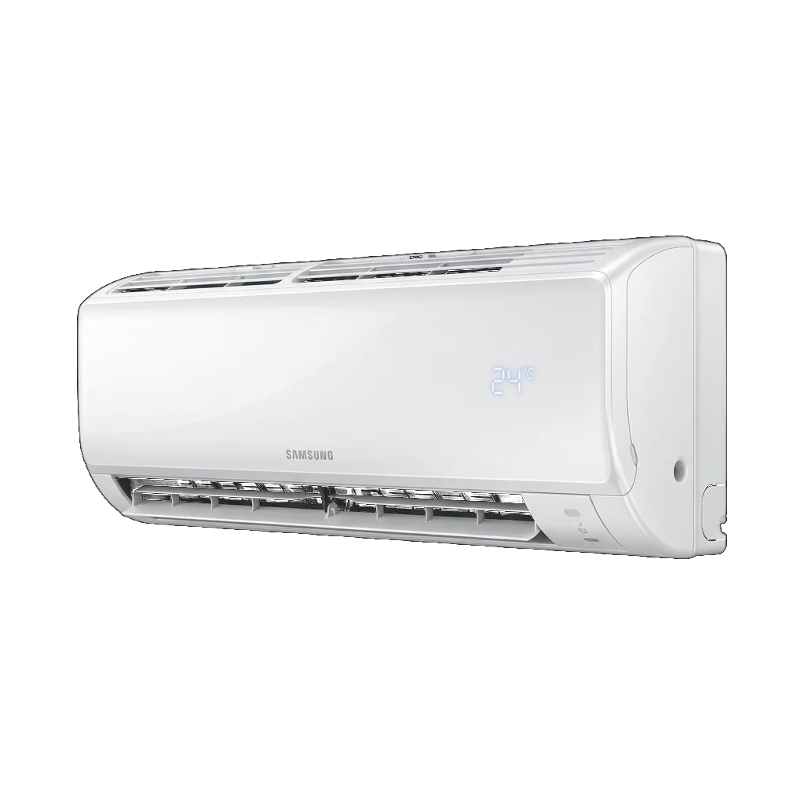
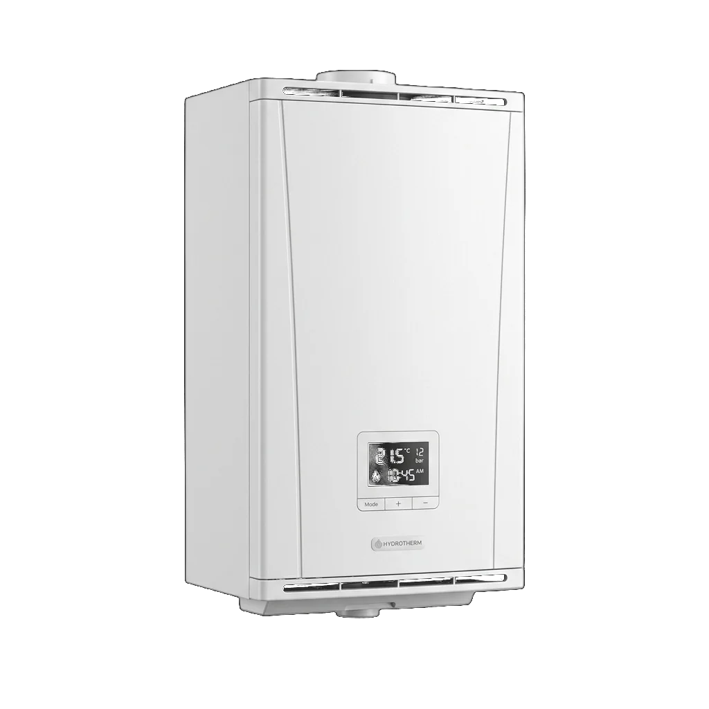
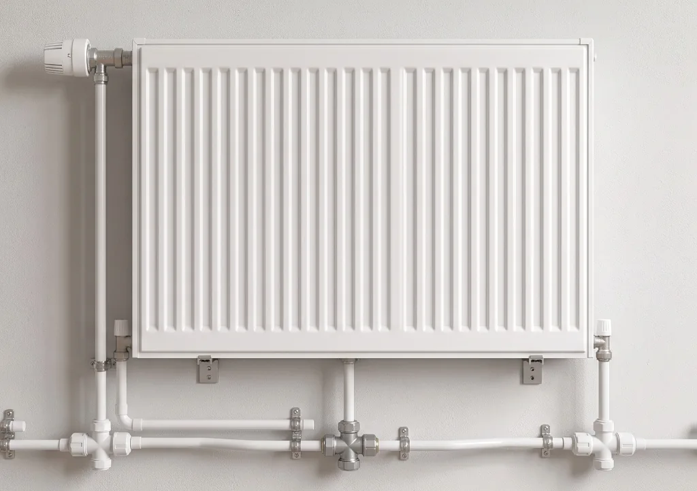

Mevsimler değişir.
Konfor ihtiyacı değişmez.
Hizmetlerimiz
Kombi, klima ve tesisat alanında profesyonel servis hizmetleri
Kombi Servisi
Tüm marka ve model kombilerin bakım, onarım ve montaj hizmetleri. Hızlı ve güvenilir çözüm.
Klima Servisi
Klima bakımı, gaz dolumu, arıza tespiti ve montaj hizmetleri. Tüm marka klimada uzman müdahale.
Kombi Bakımı
Yıllık periyodik bakım ile kombinizin ömrünü uzatın, arızaları önleyin ve enerji tasarrufu sağlayın.
Petek Temizliği
Radyatör ve petek temizliği ile ısınma verimliliğinizi artırın, doğalgaz faturalarınızı düşürün.
Kombi Montajı
Yeni kombi montajı, petek montajı ve yer değişimi işlemleri. Uzman ekibimizle güvenli kurulum.
Klima Tamiri & Gaz Dolumu
Soğutma kaybı, gaz kaçağı tespiti, freon dolumu, kompresör ve kart arızalarında hızlı servis.
Yazın serinlik
tesadüf değildir.
Doğru montaj, düzenli bakım ve kaliteli işçilik — klimanızın yıllarca verimli çalışmasının anahtarı budur. Performans kaybı, su akıtma ve soğutmama gibi sorunlarda hızlı müdahale ederiz.
Yeni klimanızı duvara monte etmekten, eski cihazınızın filtre ve gaz bakımına kadar tüm klima işlemlerini tek seferde halledebiliriz. Sakarya merkez ve ilçelerinde aynı gün servis.

Kışın sıcaklık
detaylarda saklıdır.
Kış aylarında kombinin düzgün çalışması sadece konfor değil, güvenlik meselesidir. Yıllık bakımla hem verimliliği artırır hem olası arızaların önüne geçeriz.
Ateşleme sorunu, sıcak su gelmemesi, basınç düşmesi veya hata kodu veren kombinize yerinde müdahale. Tüm marka ve modellere hakimiz.

Duvarın arkasındaki
sistem de önemlidir.
Su tesisatı, bağlantılar ve kalorifer hattı — gözden uzak ama evin en kritik altyapısıdır. Sızıntı tespitinden yeni hat döşemeye, tıkanıklık açmadan petek değişimine kadar tüm tesisat işlerinizi çözeriz.
Banyo, mutfak ve ıslak hacim tadilatlarında komple tesisat yenileme yapabilir; eski binalarda boru hattı revizyonu gerçekleştirebiliriz.
Sıkça Sorulan Sorular
Kombi, klima ve tesisat hakkında en çok merak edilen konular ve pratik çözüm yolları.
Kombinizin ısıtmamasının temel nedenleri; su basıncının 1.5 bar altında olması, devirdaim pompası veya üç yollu vana arızası, tesisat filtrelerinin tıkanması veya radyatörlerde hava birikmesidir. Tesisatınızın havası alındıktan veya kombi bakımı yapıldıktan sonra sorun genellikle çözülür.
Klimanın soğutmamasının başlıca nedenleri; gaz (freon) eksilmesi veya kaçağı, hava filtrelerinin kirlenmesi, kompresör arızası ve dış ünite fan tıkanıklığıdır. Klima soğutmak yerine ılık üflüyorsa veya bakır borularda karlanma/buzlanma görülüyorsa gaz dolumu gerekebilir.
İdeal kombi su basıncı 1.5 bar (1.2 - 1.8 bar arası) olmalıdır. Basınç 1 barın altına düştüğünde kombinin altındaki doldurma musluğu açılarak 1.5 bara kadar su basılmalıdır. Basınç sık sık düşüyorsa tesisatta su kaçağı veya genleşme tankında arıza olabilir.
Kombi bakımı yılda 1 kez kış öncesi (Eylül-Ekim), klima bakımı ise yaz öncesi (Nisan-Mayıs) yapılmalıdır. Periyodik bakım cihaz ömrünü uzatır, %20 ila %30 enerji tasarrufu sağlar ve büyük arızaları önler.
Evet, peteklerin alt kısmı soğuk kalıyorsa veya yakıt tüketimine rağmen ev yeterince ısınmıyorsa petek temizliği şarttır. 2 yılda bir ilaçlı ve makineli petek yıkama yapılması radyatör içindeki çamurlaşmayı temizler ve ısınma verimini artırır.
Klimanın iç ünitesinden su damlamasının en yaygın nedeni drenaj (tahliye) hortumunun tıkanması, eğiminin bozulması veya iç ünite filtrelerinin aşırı kirlenmesi sonucu peteklerin buz tutup erimesidir.
Nasıl çalışırız?
Bizi Arayın
WhatsApp veya telefon üzerinden sorununuzu kısaca anlatın. Fotoğraf paylaşmanız teşhisi hızlandırır.
Randevu & Ziyaret
Size uygun saatte adresinize geliriz. Yerinde inceleme yapıp durumu değerlendiririz.
Çözüm & Teslim
İşlem öncesi bilgilendirme, ardından montaj, bakım veya onarım — genellikle aynı gün tamamlanır.
Bir sorun varsa,
çözümü bir telefon uzağınızda.
Sakarya ve çevresinde klima, kombi ve sıhhi tesisat hizmetleri için doğrudan ustanıza ulaşın. WhatsApp üzerinden fotoğraf paylaşarak sorununuzu kolayca anlatabilirsiniz.
Sakarya'da
yerinde çözüm.
Klima, kombi ve sıhhi tesisat alanlarında montaj, bakım ve onarım ihtiyaçlarınıza doğrudan ulaşabileceğiniz teknik servis hizmeti.
İşin arkasında duran, işi bilen ve sizinle yüz yüze iletişim kuran bir usta. Sorun ne olursa olsun, önce dinler, sonra çözeriz.